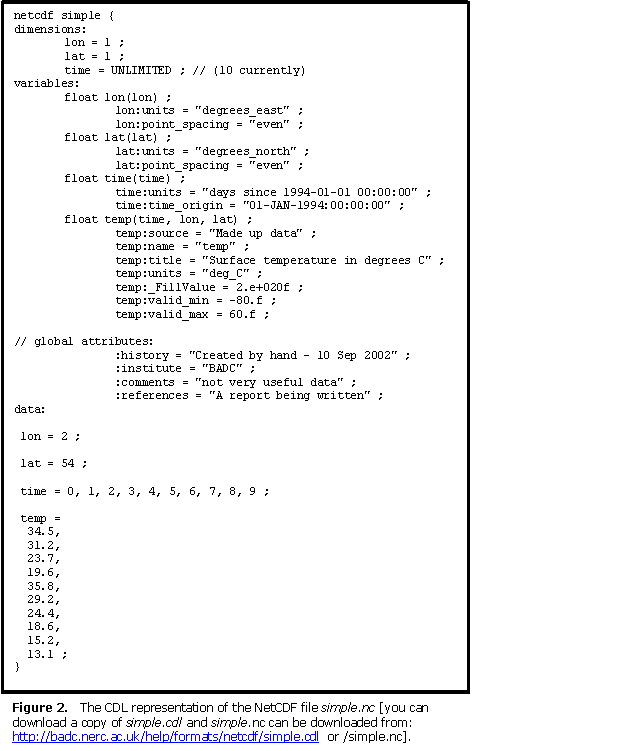

The netCDF simple file and its CF conventions faults
The simple example of a netCDF file we gave does have a few faults, if
we were adhering strictly to the CF conventions.
Faults in the declaration of the variables
- No standard_name given; this is desirable
- No long_name given
- Time would usually be double not float
Faults in the declaration of global attributes
- No Conventions: "CF-1.0" statement
- title and source are missing; these are desirable
